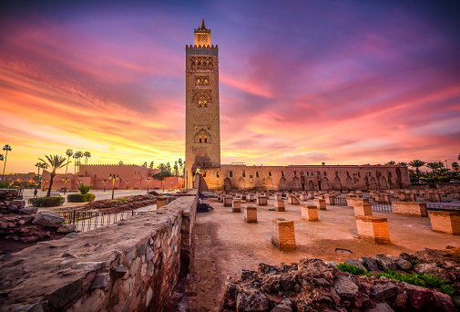
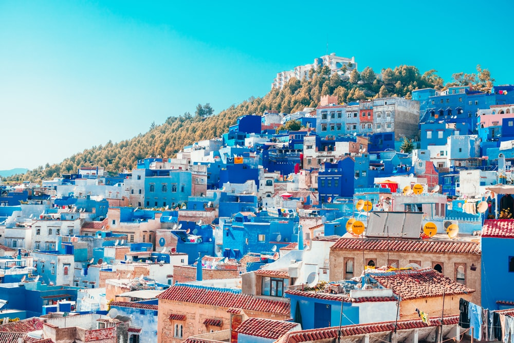
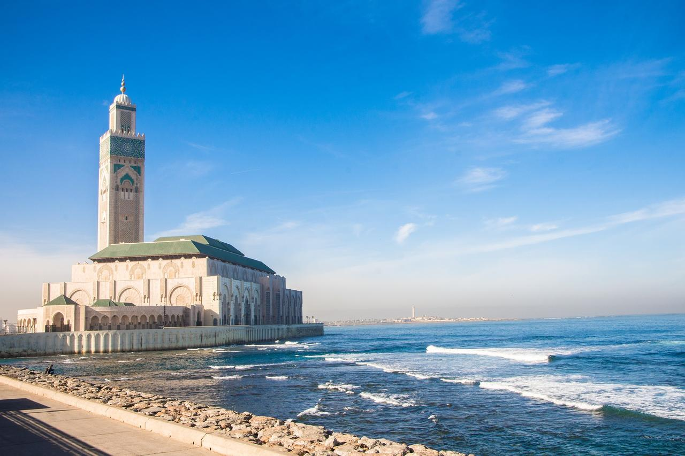

À la fois traditionnelle et contemporaine, Marrakech séduit par ses multiples facettes. À 3h d’avion de Paris, elle est facilement accessible et attire les visiteurs souhaitant changer d’air le temps d’un week-end. Avec en toile de fond les cimes des montagnes de l’Atlas, la ville et ses différents quartiers sont remplis de trésors. Tour à tour vibrante et calme, électrique et sereine, chacun y trouvera son bonheur, que ce soit dans les ruelles pittoresques de la Medina, le centre-ville historique gardé par les remparts, dans les jardins luxuriants de Majorelle et de la Ménara, ou bien dans les boutiques branchées de Guéliz, la partie moderne. Plus au nord, la Palmeraie est quant à elle propice aux virées en quad ou aux balades à dos de dromadaires. Envoûtante et généreuse, Marrakech vous tend les bras.
Chefchaouen, c’est un peu la carte postale du Maroc. Situé dans le nord-est du pays, ce village de montagne intrigue par sa couleur bleue délavée qui recouvre entièrement les murs des habitations. Une balade dans les ruelles étroites de Chefchaouen nous transporte presque dans un pays imaginaire, entre dépaysement et enchantement. En plein cœur de la médina, les petites rues sinueuses sont jalonnées de tapis, tissus, herbes et épices, paniers tressés et autres objets artisanaux. Ce chaleureux village possède également plusieurs monuments historiques que l’on peut apercevoir au détour d’une ruelle : la place centrale Outa El-Hammam plantée d’arbres est le rendez-vous quotidien des touristes et des Chaounais, et on peut y contempler depuis l’une des terrasses les murs en terre cuite de l’ancienne Kasbah. Non loin de là, se trouve la Grande Mosquée, que l’on peut admirer seulement depuis l’extérieur car l’entrée est réservée uniquement aux musulmans.
Ville portuaire moins fréquentée que ses cousines du bord de mer Agadir ou Essaouira, Casablanca n’en est pas moins dépourvue d’attraits touristiques, et fait figure de capitale économique du Maroc. Dynamique et cosmopolite, la ville mélange les influences arabes et européennes. D’un côté, l’architecture mauresque, de l’autre, le style Art déco. Du côté des emplettes, il y a deux écoles : le marché central traditionnel, ou bien le Morocco Mall, plus grand centre commercial d’Afrique ultra-moderne ! En parallèle de son centre-ville historique, la ville s’est également dotée d’un important centre d’affaires. La nuit tombée, « Casa », offre à ses fêtards et noctambules une pléiade de bars, restaurants, et clubs branchés où faire la fête jusqu’au petit matin. La mosquée Hassan II est le monument incontournable à voir à Casablanca. Construite partiellement sur la mer, l’impressionnant édifice semble flotter sur les eaux. Grand complexe religieux et culturel de 9 hectares, la mosquée peut se vanter de détenir plus d’un record : elle fait en effet partie des plus grandes mosquées de la planète, et son minaret d’une hauteur de 210 mètres, et quant à lui le plus haut du monde. Et que l’on ne s’y trompe pas, son architecture d’apparence traditionnelle est en réalité un bijou de technologie conçu avec un toit ouvrant.
